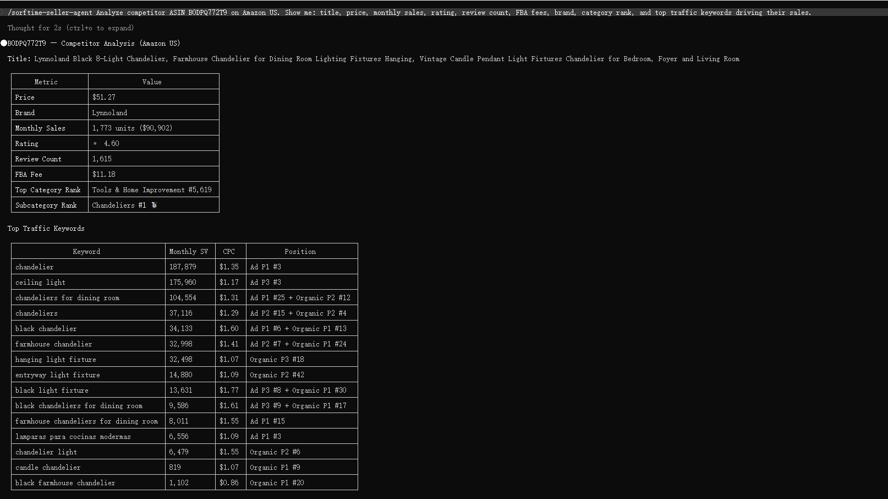

You've checked your price. It's competitive. Your shipping is fast. Your metrics are green. But you're only winning the Buy Box 60% of the time. What's actually happening?
This is not an uncommon experience. The Amazon Buy Box operates on a multivariate scoring system that weighs price, fulfillment speed, account health, inventory depth, and historical performance in a single composite score. Most sellers focus on one or two levers — usually price and shipping — and assume that is enough.
In July 2026, Amazon removed the eligibility pre-check for the Buy Box across European and UK marketplaces, with a global rollout expected by year end. More sellers now enter the competition pool for every listing. This makes understanding the full scoring model no longer optional — it is the difference between converting a search impression and watching a competitor take the sale.
The Buy Box algorithm evaluates multiple weighted factors in real time. The exact weightings shift, but the categories are stable:
The challenge is that these factors interact. A seller with FBA and a 0.5% defect rate who prices $2 above the lowest competitor may still win the Buy Box if their inventory depth is consistent and their listing converts better. Another seller with identical pricing but a higher defect rate and spotty inventory may lose it.
The Buy Box is not a solo performance evaluation. It is a ranking among all sellers on the same ASIN. You do not need to be perfect on every dimension. You need to be better than the other sellers currently competing for that slot.
This is where data becomes essential. Without knowing what the other sellers are doing — their pricing movements, their inventory patterns, their fulfillment choices — you are optimizing in the dark.
The sorftime-seller-agent, an open-source MCP server, gives any MCP-compatible AI agent direct access to marketplace intelligence data. Instead of manually checking competitor prices across browser tabs, you ask your AI agent a question and get structured answers in seconds.
Here is a practical example. The same MCP tools power every query in this walkthrough.
### Step 1: Know the Competitive Landscape
Start by understanding who you are competing against on any given ASIN. The MCP tools expose competitor pricing, sales velocity, and fulfillment data directly through your AI agent.
# Clone and set up the sorftime-seller-agent
git clone https://github.com/DannylydST/sorftime-seller-agent
cd sorftime-seller-agent
python3 scripts/install.pyAfter installation, open your MCP-compatible AI agent (Claude Code, Codex CLI, Cursor) and ask:
> Show me all sellers on ASIN B0XXXXXXXXX on Amazon US. I need their current price, estimated monthly sales, fulfillment method, and the date they last changed their price.
Your AI agent calls the product detail and traffic tools through MCP, cross-references the data, and returns a structured view of the competitive set. You see not just who is winning the Buy Box right now, but the full distribution of seller strategies on that ASIN.
### Step 2: Track Pricing Movements Over Time
A single price snapshot tells you little. What matters is how competitors react to market changes, seasonal demand shifts, and your own pricing moves.
> Pull the 30-day pricing history for ASIN B0XXXXXXXXX on Amazon US. Show me when each seller adjusted their price, the new price, and whether the Buy Box changed hands within 24 hours of each change.
The agent queries the product trend tools and returns a timeline. You can spot patterns — one seller drops price every Friday evening, another matches within an hour, a third holds price steady and still wins 40% of the time because of superior fulfillment speed and metrics.
### Step 3: Find the Price Band That Actually Converts
The lowest price does not always win the Buy Box, and it almost never maximizes profit when it does. The better question is what price band captures the most conversions at acceptable margin.
> On Amazon US category 1064954 (Kitchen & Dining), give me the price band that accounts for the top 30% of estimated sales. Include the average star rating and fulfillment method of sellers in that band.
The category report tool surfaces the sales-weighted price distribution. You may find that the $24.99 to $29.99 band drives 40% of sales even though $19.99 options exist. Sellers in that band use FBA and maintain 4.3+ star ratings — the combination wins the Buy Box despite not being the cheapest.
### Step 4: Monitor for Opportunities
Buy Box dynamics change daily. New sellers enter, prices shift, inventory runs out. A monitoring setup catches these changes without manual checking.
> Monitor this ASIN daily. Alert me when the current Buy Box holder changes, when a new seller appears in the top 5, or when the lowest price drops more than 10% in 24 hours.
The monitoring engine runs on your schedule, using the same MCP tools to check real-time data and surface changes as structured reports.
Across categories, sellers who consistently win the Buy Box at 80% or higher share a common pattern. They do not compete on price alone. They compete on the combination of fulfillment reliability, pricing within the category's conversion sweet spot, and consistent inventory availability. They know their competitive set in detail and adjust based on data, not instinct.
A seller running the same ASIN across three strategies illustrates the point:
The lowest price produced the lowest net profit. The strategy with a higher price but better fulfillment and listing quality won more often and earned more per sale. This is the kind of insight that comes from seeing the full data picture, not from watching a single repricing rule.
The sorftime-seller-agent is open source and free to use. The only cost is the Sorftime API access for the data pipeline, which includes a free trial tier — no credit card required.
git clone https://github.com/DannylydST/sorftime-seller-agent
cd sorftime-seller-agent
python3 scripts/install.pyYou will need a Sorftime account for the API key. Register at open-intl.sorftime.com. After installation, your AI agent can start querying marketplace data immediately. The tools cover product intelligence, competitive tracking, keyword analysis, category trends, and monitoring across 40+ marketplaces.
The Buy Box is not a mystery. It is a system of weighted variables. The seller who measures the most variables and adjusts accordingly will win more often than the seller who guesses. The data is already there. The question is whether you have a way to ask it.